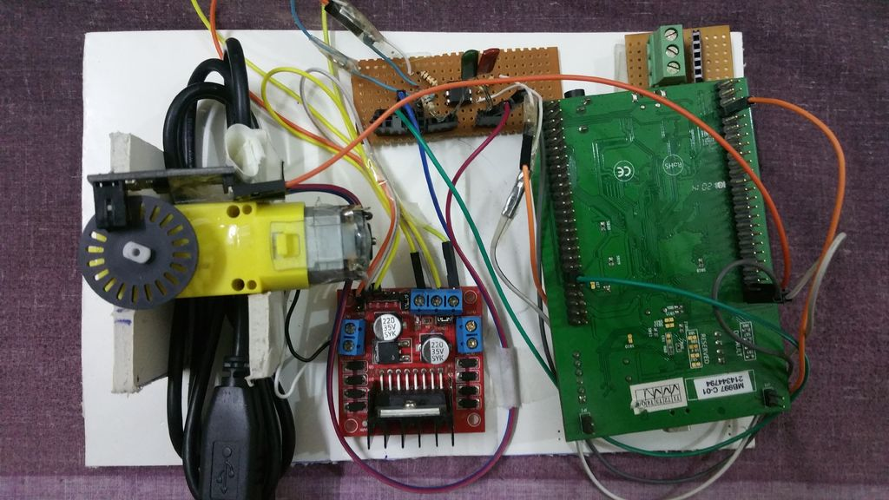

PCB IC SMT
PCB SMT
http://club.szlcsc.com/article/details_963_1.html
QQ：360288148
https://www.amobbs.com/thread-4694728-2-1.html
ID: aydali, caihong001, mandylion2008, hujiaqisr71, baikenor
http://lucy.vub.ac.be/
https://www.microchip.com/
https://www.sz-jlc.com/ PCB打样
PCA9685--16路 PWM模块舵机驱动板--STM32 IIC接口模块
https://forum.arduino.cc/index.php?topic=361718.0
https://forum.poppy-project.org/t/powering-poppy-with-openservo-v4/148
！！！！
https://github.com/alvaroferran/IntelliServo
CNC-zone
https://www.cnczone.com/forums/open-source-controller-boards/283428-cnc-8.html
https://www.cnczone.com/forums/open-source-controller-boards/283428-cnc.html
电子发烧友论坛
http://bbs.elecfans.com/
PCB
https://componentsearchengine.com/part.php?partID=85952
TOF range sensor
VL53L0X VL53L1x
DC Servomotor Controller(！！好资料！！)
http://elm-chan.org/works/smc/report_e.html
STM32 PID Servo control
https://github.com/rooi-oog/STM32_PID
openservo:
https://github.com/ginge
https://www.robotshop.com/
https://www.robotshop.com/community/
Speed Control of DC Motor Using PID Algorithm (STM32F4)
https://www.instructables.com/id/Speed-Control-of-DC-Motor-Using-PID-Algorithm-STM3/
https://www.robotshop.com/community/forum/t/servo-position-angle-control-using-pid-controller/42507
There are other open source servo projects as well (just do a Google search).
Ex: https://odriverobotics.com/ 11
Q) Do I need encoder?
You need something to give you absolute positioning - normally a potentiometer or encoder
Q) How can I control the angle?
Your microcontroller will read the current angle, and (based on input) the desired angle. The PID algorithm within the microcontroller will effectively control the motor’s speed (the microcontroller will send velocity commands to the motor controller which controls the motor’s speed and direction).
Q) does it have any dynamics of transfer function?
Start with a PID and then refine it. You can get as complex as you’d like.
Q) Is the input of the servo is PWM?
If you’re creating a normal RC servo, then yes, the input is a timed 5V pulse which the microcontroller then interprets as a position.
Q) so the PID generates PWM?
The PID is used to provide speed and direction values to a motor controller. It does not have anything to do with the input (which only relates to the desired end position / angle).
Position Sensor -> Microcontroller (PID)
RC PWM Input -> Microcontroller (PID) -> Motor controller (PWM / Serial / I2C etc.) -> Motor
Hope this helps.
DIY Servo Motor
https://roamingdrone.wordpress.com/2008/07/24/diy-servo-with-arduino-dc-motor-and-potentiometer/
https://www.instructables.com/id/DIY-Servo-Motor/
https://www.hobbyist.co.nz/?q=convert-dc-motor-to-servo-using-arduino
http://www.audiohms.com/en/blog/item/156-convert-dc-motor-into-dc-servo-motor
Robot Learning:
https://www.bilibili.com/video/av18516816/?p=22
Servo Details:
https://dronebotworkshop.com/servo-motors-with-arduino/
https://github.com/DroneBotWorkshop/arduino-projects
LIDAR:
https://dronebotworkshop.com/getting-started-with-lidar/
***dcservo
https://github.com/misan/dcservo
H-Bridge IC
MC33887 5-28V，5A，10kHz Motorola
SN754410 4.5-36V 1A TI
DRV8833 5 V, 1.5-A
*DRV8837 1.8-7V 1.8A TI
DRV8873 4.5-38V 10A with Integrated Current Sensing and Current Sense Output
**HR8833
L298N
L293D 散热不如298
L9110H
**TA6586
TA7257P 6-18V 4.5A
VNH5200AS-E
VN5770AKP-E
****TB6612FNG 15V, 1.2A 2-motors RMB8.0
A3950ST 36V, 2.8A 1-motor Ubtech
AT8841 杭州中科微电子 http://www.icofchina.com/pro/mada/
IR2101半桥驱动电机https://www.cnblogs.com/clnchanpin/p/7043803.html
DRV8841: https://yatao.blog.csdn.net/article/details/90574517
测试L298N, TB6612FNG and LV8406T
https://forum.makeblock.com/t/the-review-of-dc-motor-drivers-l298n-tb6612fng-and-lv8406t/372
https://forum.arduino.cc/index.php?topic=316340.0
When PWM'ing at high frequencies (usually 20kHz to 30kHz), the current ripple can be minimized by using brake instead of coast. Brake recirculates he current in the winding during the off time. Using coast is less efficient from a current ripple and heat standpoint. The current decays faster, so the ripple is more. And more heat is generated in the FETs because the current path is through the body diodes.
Most of our brushed motor drivers use brake mode when automatically regulating current. An example of this is the DRV8870.
If using brake for a long period of time, will cause the motor to stop faster than coast.
7550 稳压IC 正电压输出的78××系列和负电压输出的79××系列
7805
STM32F103RCT6 256 48RAM 64Pins
STM32F103C8T6 64Flash 20RAM 48Pins
姿态传感器 MPU6050
气压计使用的是FBM320 BMP280、SPL06
SI2302这款MOS管
无线芯片：SI24R1 NRF24L01
AMS1117
rt9193 300mA,超低噪音,超高速CMOS LDO稳压器
ZXCT1009 电流监控器(ACS712交流检测)
HT7550 SOT89 三端稳压芯片 电压稳压器
建议用中断加DMA。
现在我搭载在自己写的实时内核，一个总线挂了四五个设备，各个任务乱序访问，一点问题也没发现过。
MAX4172 INA194，195 TI
fxanhkhoa/stm32f103_i2c--multi-sensor-mpu9250
https://github.com/fxanhkhoa/stm32f103_i2c--multi-sensor-mpu9250
https://github.com/fxanhkhoa/NCKH_WAND
https://www.phidgets.com/docs/DC_Motor_and_Controller_Primer
a4959lpt
mpgd 3510 a974
yj33
avqg 632
Postion Sensors:
https://github.com/nickhudspeth/AS5600
MA730GQ 代替 AS5145B AS5048A AS5040 MPS730
This version uses the AS5045 magnetic sensor, the next version will use AS5600 or MLX90316.迈德尔传感
AS5045 14bit
AS5600 12bit 0.05deg
TLE5012B 15bit 0.01deg
MLX90316 14bit
HMC1501 磁阻传感器
KMZ41
IIC Switch,I2C多路复用器: PCA9548A,
L298 Motor Drive Demos
Sketches show different ways to make DC motors have direction and speed control.
https://github.com/automation-technology-club/L298-Motor-Drive-Demos
For Indoor Robotic navigation using NFC Tags
https://github.com/automation-technology-club/NFC-indoor-location-Mockup
pom塑料齿轮
http://www.gearbbs.com/
https://github.com/open-rdc
舵机测试仪
https://www.amobbs.com/forum.php?mod=viewthread&tid=4694728
研究舵机
https://www.amobbs.com/thread-5053868-1-1.html?_dsign=7a8aec47
https://www.amobbs.com/thread-5471538-1-1.html?_dsign=38abbbc8
36.4 KB (37,287 字节)
https://blog.csdn.net/tichimi3375/article/details/80659255 FreeRTOS使用
https://easyeda.com/jeanfreitas/pcb2-placa
pcb
平衡车
http://www.51hei.com/bbs/dpj-135469-1.html
本文主要介绍几款本土高性价比的电机驱动芯片，可直接替换一些国外进口型号芯片，主要适 用于各种消费类电子产品，提升客户产品竞争力。
1：HR4988
控制方式：STEP/DIR，2个H桥，细分：1-1/16，逻辑电源电压：3.0-5.5V，功率电压：8-38V，输出电流：2.0A QFN28，可以完全pin to pin A4988，价格和供货这块相对比较稳定。
2：HR4985
控制方式：STEP/DIR，2个H桥，细分：1-1/8，逻辑电源电压：3.0-5.5V，功率电压：8-38V，输出电流：1.0A QFN24。
3：HR8826
控制方式：STEP/DIR，2个H桥，细分：1-1/32，逻辑电源电压：3.3V（内建），功率电压：8-42V，输出电流：3.0A HTSSOP28，可完全pin to pin DRV8825，价格和供货相对稳定。
4：HR8833
控制方式：PWM，2个H桥，逻辑电源电压：3.3V（内建），功率电压：2.7-12.8V，输出电流：1.5A eTSSOP16/QFN16，可完全pin to pin DRV8833，价格和供货相对稳定。
5：AT4950
控制方式：PWM，1个H桥，功率电压：6.5-32V，输出电流：3.5A eSOP8，可完全pin to pin A4950，价格和供货相对稳定。
对以上电机驱动芯片有兴趣的朋友可以随时联系：15814460382 陈生
————————————————